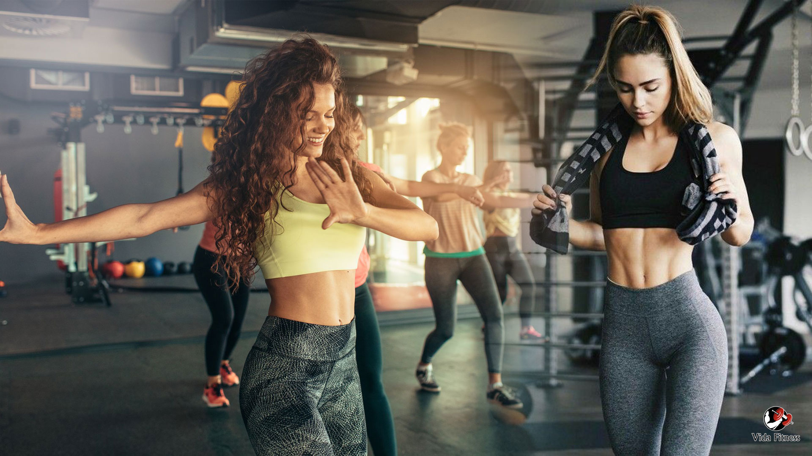
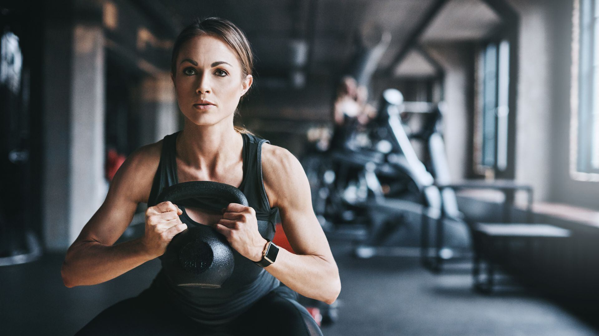
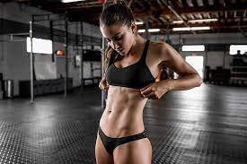

Para empezar, una vida fitness se trata de un estado de bienestar que se consigue a través del ejercicio y una alimentación balanceada y saludable. En este sentido, es indispensable que estos dos elementos siempre estén presentes y, sobre todo, que vayan de la mano, contemplándose el uno al otro.
El mundo del fitness es muy amplio y diverso. No hay fórmulas exactas. Lo que funciona en algunos puede no ser tan eficiente en otros. Lo que necesitas es encontrar una manera de ejercitarte que realmente disfrutes y, para ello, es esencial la guía de un entrenador que entienda tu nivel de actividad física, preferencias, objetivos y limitaciones. De esta forma podrán encontrar la rutina adecuada para ti, con los ejercicios con los que te sientas cómodo. Poco a poco podrás ir aumentando la intensidad.
En cuanto a la comida, sucede lo mismo. El plan alimenticio que complemente tu entrenamiento tiene que estar hecho por un especialista y a la medida de tus necesidades. No debe representar un gran sacrificio o muchas limitaciones. Tendrá que estar lleno de opciones que de forma gradual vayan creando un verdadero cambio de hábitos.
Dentro de las cosas que debes tener en cuenta al descubrir cómo empezar una vida fitness es que se trata de un proceso paulatino y progresivo, por lo tanto, llegar a una meta final no será tan rápido como pudieras pensar. Para no entrar en la desesperación, lo ideal es que te concentres en metas y recompensas inmediatas. De esta forma tendrás muchas más posibilidades de éxito para alcanzar tus objetivos físicos a largo plazo.
Contar con alguien que te acompañe y te motive en tu nuevo estilo de vida activo será de mucha ayuda. Así que intenta rodearte de amigos, familiares o conocidos con los que puedas intercambiar ideas, opiniones y sobre todo, te den muchos consejos de cómo seguir progresando.
Conforme vayas avanzando y tengas claros tus objetivos y posibilidades, podrás ir ampliando tus opciones de alimentación. Junto con un especialista lograrás encontrar distintas formas de incluir las porciones que necesitas para tu entrenamiento de una manera más agradable a tu paladar.
La vida fitness requiere de un cambio profundo de hábitos cotidianos, tanto de alimentación como de entrenamiento. Desde la forma en que combinas tus alimentos hasta la manera en que los cocinas.
En cuanto a la actividad física, tendrás que analizar y modificar costumbres que te permitan mantenerte en movimiento, como elegir las escaleras en vez del elevador o caminar en lugar de subirte en tu auto para distancias cortas.